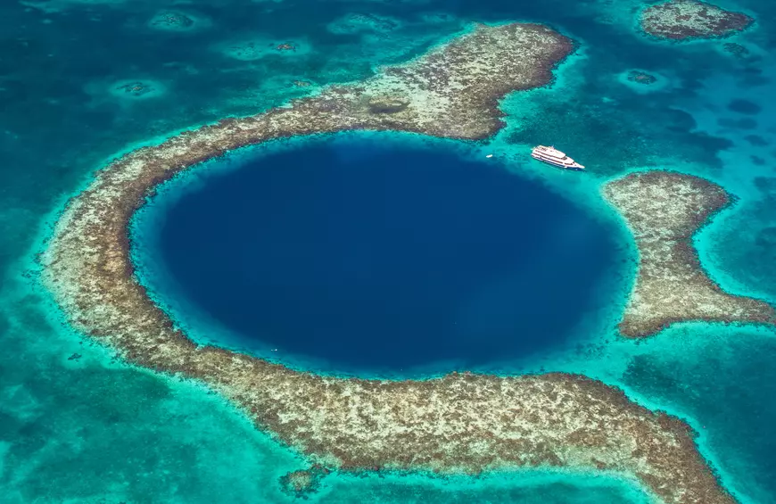

벨리즈 그레이트 블루홀
아래 사진은 벨리즈에 있는 그레이트 블루홀. 유네스코에서 세계자연유산으로 지정한 곳이다. 이런 지형은 벨리즈, 바하마, 이집트, 오스트레일리아 등에 있다.

이 장소는 이곳이 세계 스쿠버 다이빙 장소 베스트 10 중 한 곳이라 알린 자크 쿠스토에 의해 유명해졌다. 1971년 그는 그의 칼립소 호를 타고 구멍의 깊이를 그래프화하기 위해 그레이트 블루홀을 방문했다. 이 탐사에서 이루어진 조사에 따르면이 구멍은 전형적인 석회암 지층의 카르스트 지형이 그 기원이며, 해수면이 상승하기 전에 적어도 4단계에 걸쳐 형성되었다. 21 m (69 ft)와 49 m (161 ft), 그리고 91 m (299 ft)의 깊이에 튀어나온 부분이 남아있다. 물 속에 잠겨 있던 동굴에서 채취한 종유석을 통해서 해수면 위에서 형성되었음을 확인할 수 있다. 종유석들 중 일부는 일관된 방향으로 5도 정도 수직으로부터 기울어져 있는데, 이는 어떤 과거의 지질학적 변화가 있었고 고원과 같은 기울어진 지형이었다가 현재 평평한 면인 상태로 오랜 시간이 흘렀음을 나타낸다.